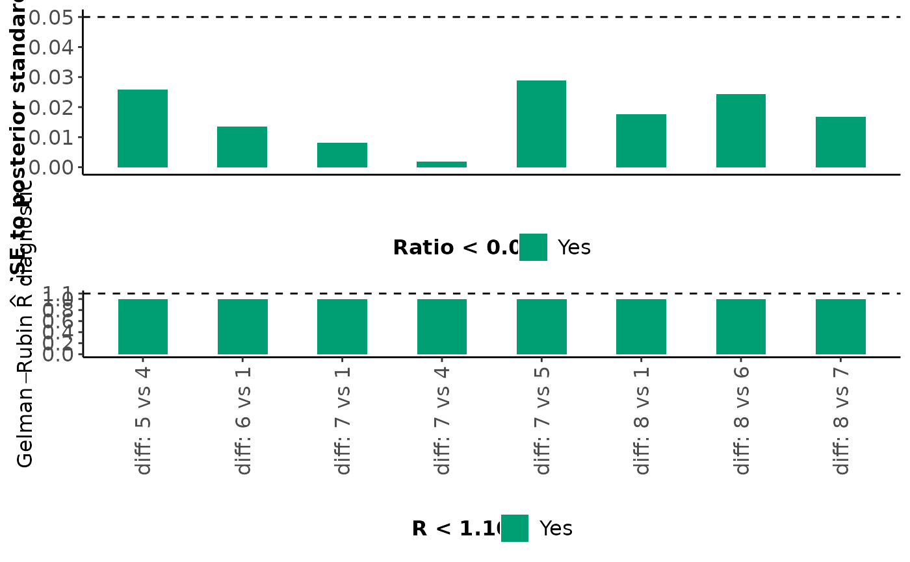
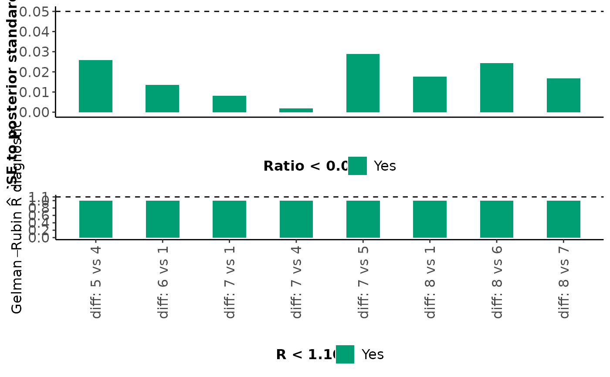

Evaluates whether convergence has been achieved for the monitored parameters of the Bayesian models. The Gelman-Rubin convergence diagnostic, the Markov Chain Monte Carl (MCMC) error and relevant diagnostic plots are applied.
Arguments
- net
An object of S3 class
run_metareg,run_model,run_nodesplit,run_sensitivity,run_series_meta, andrun_ume. See 'Value' in the functions above.- par
A vector of at least one character string that refers to the monitored parameters in
jagsfitwhich is an object of S3 classrun_metareg,run_model, andrun_ume. The selected parameters will be considered in the diagnostic plots (see 'Value'). This argument will be ignored for objects of S3 classrun_nodesplit,run_sensitivity, andrun_series_meta.
Value
mcmc_diagnostics considers the following monitored parameters
to create the barplot on the ratio of MCMC error to the posterior standard
deviation and the barplot on the Gelman-Rubin R diagnostic:
- EM
The estimated summary effect measure.
- EM_pred
The predicted summary effect measure.
- delta
The estimated trial-specific effect measure.
- tau
The between-trial standard deviation.
- direct
The direct estimate of the split node (see 'Value' in
run_nodesplit).- indirect
The indirect estimate of the split node (see 'Value' in
run_nodesplit).- diff
The inconsistency factor of the split node (see 'Value' in
run_nodesplit).- phi
The informative missingness parameter.
- beta
The regression coefficient.
For each monitored parameter mentioned above, mcmc_diagnostics also
returns a barplot on the ratio of MCMC error to the posterior standard
deviation and a barplot on the Gelman-Rubin R diagnostic. Bars that
correspond to a ratio less than 5% are indicated in green (the
corresponding parameters have been estimated accurately); otherwise, the
bars are indicated in red (inaccurate estimation). Furthermore, bars that
correspond to an R value less than 1.10 are indicated in green (the
corresponding parameters have been converged); otherwise, the bars are
indicated in red (convergence is not achieved).
mcmc_diagnostics returns histograms than barplots for EM when
run_sensitivity is considered.
mcmc_diagnostics also uses the
traceplot,
densplot, and
autocorr.plot functions of the R-package
coda to return the trace
plots, density plots, and autocorrelation plots for all or selected
monitored parameters through the par argument.
Details
For each monitored parameter, mcmc_diagnostics considers the
R-hat and MCMC error and compares them with the thresholds 1.1 and 5% of
the posterior standard deviation (the rule of thumb), respectively.
Convergence is achieved for the monitored parameter, when the R-hat is
below the corresponding threshold. Visual inspection of the trace plots
and posterior density of the monitored parameters should also be considered
when drawing conclusions about convergence.
References
Gelman, A, Rubin, DB. Inference from iterative simulation using multiple sequences. Stat Sci 1992;7(4):457–72. doi: 10.1214/ss/1177011136
Examples
data("nma.baker2009")
# Read results from 'run_nodesplit' (using the default arguments)
res <- readRDS(system.file('extdata/node_baker.rds', package = 'rnmamod'))
# Check convergence based on R-hat
mcmc_diagnostics(net = res,
par = c("tau", "EM[2,1]", "EM.pred[2,1]"))
#> R-hat < 1.10 is an indication of convergence. Visual inspection of the trace plot and posterior density of the monitored parameters should *also* be considered when concluding about convergence.
#> Note: The argument 'par' is ignored. It is used only with 'run_metareg', 'run_model', and 'run_ume'.
#> $Between_trial_SD
 #>
#> $Direct_estimates
#>
#> $Indirect_estimates
#>
#> $Direct_estimates
#>
#> $Indirect_estimates
 #>
#> $Inconsistency_factors

#>
#> $table_tau
#>
#>
#> Table: The (common) between-trial standard deviation
#>
#> |R.hat |MCMC.rule |
#> |:--------------|:--------------|
#> |Not applicable |Not applicable |
#>
#> $table_phi
#>
#>
#> Table: The common informative missingness parameter
#>
#> |R.hat |MCMC.rule |
#> |:--------------|:--------------|
#> |Not applicable |Not applicable |
#>
#> $table_beta
#>
#>
#> Table: The common regression coefficient
#>
#> |R.hat |MCMC.rule |
#> |:--------------|:--------------|
#> |Not applicable |Not applicable |
#>
#>
#> $Inconsistency_factors

#>
#> $table_tau
#>
#>
#> Table: The (common) between-trial standard deviation
#>
#> |R.hat |MCMC.rule |
#> |:--------------|:--------------|
#> |Not applicable |Not applicable |
#>
#> $table_phi
#>
#>
#> Table: The common informative missingness parameter
#>
#> |R.hat |MCMC.rule |
#> |:--------------|:--------------|
#> |Not applicable |Not applicable |
#>
#> $table_beta
#>
#>
#> Table: The common regression coefficient
#>
#> |R.hat |MCMC.rule |
#> |:--------------|:--------------|
#> |Not applicable |Not applicable |
#>